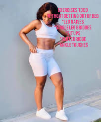

Get to know me
I was born in Venda, you might have been wondering gazing at my last name, My father is Venda all the way from the villages
who met his Zulu queen in the City Of Gold and thereafter i was born, a first born in a family of 3 girls and one boy child
I am currently residing in Sandton due to my current job position in SAICA as a mentor and from being one of the top 50 newly Charted Accountants in SA.
I am also a fitness bunny, well atleast i think i am and keeping up with a great work on it, building my social patforms as a fitness trainer is a result of that,
Seeing people engaging in a healthy life style always puts a smile on my face and hope that there are people out there who believe that taking care
of ones health is a necessity so join me as we sweat up!, get fit! and maintain with the right kind of food.

"Healthy does not look a certain way"
"Healthy is not a particular body type"
"Healthy looks different on everybody"
I will be showing you how to stay healthy, fit and take care of your sanity
Staying healthy should not be expensive to start with, you do not have to buy expensive food to be
healthy, you do not have to pay up for gym to workout,
I mean i wake in the morning and work out in my room, with no weights but just
me and my own body with a bottle of water, this is all part
of healthy lifestyle and this includes your sanity, having peace of mind, feeling relaxed
and releasing that tension in your body. Some people prefer meditation
and that also works so go to a nice area, clean and environmentally user-friendly
you can do this with music or no music, sometimes when you are outdoors
surrounded by nature, that also helps with relaxation and clearing mind
Easy daily routine: Drink water on a daily basis

healthy diet and cheat days
Do not eat the same meal everday continously, change your diet, Most people are used to the same meal, sometimes we are lazy to make
a different meal, sometimes we just don’t have variety
of ingredients, well i can relate to all, try to change your meals and not get
used to the same routines, eating healthy does not mean you nolonger
going to eat chocolate or cookies, it is nice to have some snacks once in a while
but do not make this regularly, sugary and sweet food are nice but if you
want be healthy just have those "cheat days". Do not eat
the same type of fruit many times a day, vary your fruits, for
instance if you have two bananas and two apples, take one from each type of fruit

References
images from <https://www.freepik.com/free-vector/choosing-healthy-unhealthy-food_8721738.htm